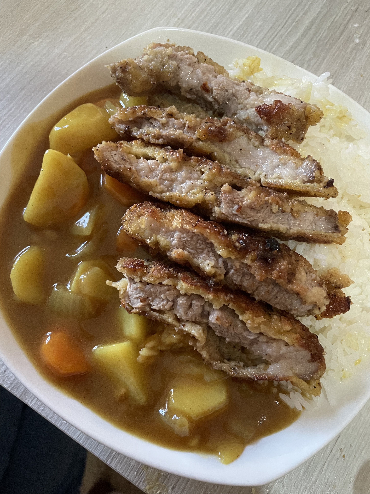

Spaghetti alla Carbonara

Un piatto classico della cucina romana con uova, guanciale e pecorino.
Ingredienti
- Spaghetti
- Uova
- Guanciale
- Pecorino Romano
- Pepe nero
Preparazione
1. Cuoci gli spaghetti. 2. Cuoci il guanciale. 3. Mescola uova e pecorino, unisci tutto e servi caldo.
Katsu curry

Il Katsu curry è un piatto giapponese composto da riso gohan, crema al curry con verdure e un tonkatsu, una cotoletta di maiale fritta nel panko, pan grattato giapponese
Ingredienti
- Riso gohan
- cipolla
- carote
- patate
- blocchi di curry
- cotoletta di maiale
Preparazione
1.Cuoci il riso in un bollitore, prepara il soffritto con carote, cipolla e patate e fai rosolare. 2.Aggiungi acqua e i blocchi di curry 3.Prepara la cotoletta di maiale a piacere. 4.Componi il piatto e servi a tavola